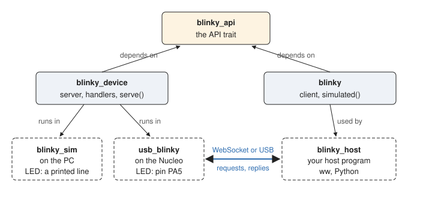

A device on your PC¶
This chapter builds the smallest useful device: an LED that a host turns on and off. You write its API as a Rust trait, serve the trait from a device simulated on your PC, and call it from a host program. No board is needed yet. On a real board later runs the same code on a Nucleo G0B1RE.
The device is called blinky. Its code lives in four crates of the repository's examples/ directory, and each
crate has one job. The figure shows them and who uses each.

| Crate | What it holds | Who uses it |
|---|---|---|
blinky_api |
The API trait, nothing else | the device and every host |
blinky_device |
The device's code: the handlers and the loop that serves them | the simulated device and the firmware |
blinky |
The host side, and the simulated device | host programs and tests |
examples_mcu/nucleo_g0b1re |
The firmware of one board | the board |
The API trait¶
An API trait lists what a device offers. Blinky offers four methods: calls that the host makes and the
device answers. Here is the whole trait, from examples/blinky_api/src/lib.rs:
/// An LED on a board.
#[ww_api_root]
pub trait BlinkyApi {
/// Turns the LED on.
#[effect(actuate)]
fn led_on();
/// Turns the LED off.
#[effect(actuate)]
fn led_off();
/// Turns the LED on or off, and returns whether it was on before.
#[effect(actuate)]
fn set_led(on: bool) -> bool;
/// How many times the LED went from off to on since the device started.
#[effect(read)]
fn blinks() -> Fixed<Item, One, u32>;
}
#[ww_api_root] marks the trait as the top of a device's API. Each fn is a method, written without a body and
without self. This chapter uses led_on and led_off, which take nothing and return nothing. The next chapter,
Methods, explains set_led and blinks.
The doc comments are part of the API. They travel to the host with it, so the command line tool and Python show
them. #[effect(actuate)] says that a call changes something in the physical world; effect marks like this one
tell tools what a call does, and a later chapter covers them.
The trait sits in an API crate of its own. The device and every host depend on it, so it builds for no_std
and depends only on ww_api, the crate with WireWeaver's derive macros and attributes. Its
examples/blinky_api/Cargo.toml also names the API's wire version, which a host and a device compare
when they connect:
# Wire version of the API (EVO-31): link setup decides on its line, `#[since]` names its revisions
[package.metadata.wire_weaver]
wire = "w1.0"
The device¶
A trait alone does nothing. The device side needs a server: code that reads a request from the bytes that arrive, calls your function for it, and writes the reply. WireWeaver generates the server from the trait. You write one handler per method, a function that does the work.
Blinky's device code is the crate blinky_device. It is written once and runs unchanged on the PC and on a board.
What differs between the two is the LED, so the crate asks the board for one through a small trait:
/// What a board gives the blinky device: one LED.
pub trait Led {
/// Turns the LED on (`true`) or off (`false`).
fn set(&mut self, on: bool);
}
The server's state is a struct. It holds the LED, whether the LED is on, and a count that the next chapter uses:
/// The blinky device: the server state that the generated code dispatches to.
pub struct Blinky {
led: &'static mut dyn Led,
on: bool,
blinks: Blinks,
}
The handlers are methods of that struct, with the names of the trait's methods. led_on and led_off switch the
LED and answer at once:
impl Blinky {
async fn led_on(&mut self, _cx: &mut Context<'_, impl EventOut>) -> RpcResult<()> {
self.switch(true);
Ready(())
}
async fn led_off(&mut self, _cx: &mut Context<'_, impl EventOut>) -> RpcResult<()> {
self.switch(false);
Ready(())
}
Each handler is async and gets a cx argument, the request's context, which these handlers don't need.
RpcResult<()> is the answer; Ready(()) answers now with nothing in it. The handler's signature follows from the
trait, so you don't have to write it by hand: ww api scaffold examples/blinky_api prints every handler's stub.
The ww_codegen! macro generates the server. It reads the trait from the API crate's source and implements the
dispatch on Blinky:
mod api_impl {
wire_weaver::ww_codegen!(
blinky_api :: BlinkyApi for super::Blinky,
server = true, no_alloc = true, use_async = true,
method_model = "_=immediate",
property_model = "_=get_set",
introspect = "with_docs",
);
}
server = true asks for a server, and no_alloc = true for one that never allocates, as a small microcontroller
needs. use_async = true makes the handlers async. introspect = "with_docs" builds a description of the API,
doc comments included, into the device, so that tools can ask the device what it offers.
Last, serve runs the server: it waits for a request, hands it to the handlers, and sends the reply. The transport,
WebSocket on the PC or USB on a board, is the server argument:
/// Serves `blinky` on `server` until `stop` resolves: the one event loop of the simulated device, the firmware and
/// the tests. A firmware that never stops passes [core::future::pending].
pub async fn serve<Tx: MessageTx, Rx: MessageRx, C: Clock>(
server: &mut Server<'_, Tx, Rx, C>,
blinky: &mut Blinky,
stop: impl Future<Output = ()>,
) {
let mut stop = pin!(stop);
loop {
let ready = match select(server.wait(), &mut stop).await {
Either::First(ready) => ready,
Either::Second(()) => return,
};
_ = server.handle(ready, blinky).await;
}
}
The device on your PC¶
A simulated device is the device code running on your PC, with something simple in place of the hardware. Blinky's
LED becomes a line of text. The example blinky_sim in examples/blinky/examples/sim.rs gives the device this
LED:
/// The simulated LED: it prints its state.
struct PrintedLed;
impl Led for PrintedLed {
fn set(&mut self, on: bool) {
println!("LED {}", if on { "on" } else { "off" });
}
}
The function simulated in the blinky crate builds the server around a WebSocket connection and runs serve:
/// Serves a blinky device on `led` to the WebSocket clients `incoming` yields, one at a time, until `stop`
/// resolves. The device's futures are not `Send`: run it on a current-thread runtime or in a `LocalSet`.
pub async fn simulated<I, S>(incoming: I, led: &'static mut dyn Led, stop: impl Future<Output = ()>)
where
I: Stream<Item = S> + Unpin,
S: AsyncRead + AsyncWrite + Unpin,
{
let mut device = Device::new(led);
let conn = WsConnection::new(IoSocket::new(incoming));
let mut buffers = Box::new(WsBuffers::<MAX_MESSAGE_LEN>::new());
let mut server = ws_server(
Device::link_config(),
&conn,
TokioClock::new(),
&mut buffers,
);
serve(&mut server, &mut device, stop).await;
}
Start the simulated device in a terminal of its own, and leave it running:
It prints blinky at ws://127.0.0.1:8080/ww, the address that host programs connect to.
The host program¶
The host side is a client: a struct with one function per method of the trait. ww_codegen! generates it too,
this time with client = "std_client". The struct holds the connection, a Commander, and implements WwClient,
which adds the functions that connect:
/// The host side of a blinky device: the calls `ww_codegen!` generates for [blinky_api::BlinkyApi] live on it.
pub struct Blinky {
cmd: Commander,
}
impl WwClient for Blinky {
/// A board over USB, by the VID:PID its firmware enumerates with.
fn default_config() -> ClientConfig {
ClientConfig::new().usb_vid_pid(0xc0de, 0xcafe)
}
fn try_from_cmd(cmd: Commander) -> Result<Self, wire_weaver_client::Error> {
Ok(Self { cmd })
}
}
mod api_client {
wire_weaver::ww_codegen!(
blinky_api :: BlinkyApi for crate::Blinky,
client = "std_client",
);
}
default_config names the device the client looks for when it gets no other address: a USB device with the vendor
and product IDs that blinky's firmware uses. The host program in examples/blinky/examples/host.rs connects to
the simulated device instead, at its WebSocket address:
let device = if args.usb {
Blinky::new().connect().await?
} else {
Blinky::config(|c| c.websocket_url(args.url.clone()).no_ww_usb())
.connect()
.await?
};
Each method of the trait is now a function on device. A call is prepared first and then sent with .call();
.await waits for the device's answer:
Run the host program in a second terminal, while the simulated device runs in the first:
The device's terminal prints LED on and LED off: the two calls reached the handlers and switched the simulated
LED. The host program prints two more lines, from the methods of the next chapter.
Where to go next¶
- Methods adds arguments and return values, and follows a call from the host to the handler and back.
- On a real board runs
blinky_deviceon a Nucleo G0B1RE over USB. - What an API can have lists the other items of a trait: properties, streams, sinks and nested traits.
//! API of the blinky example device: an LED that a host turns on and off, the first device of the book. Start here
//! when new to WireWeaver; `blinky_api_evolved` shows the same API after a change.
#![cfg_attr(not(feature = "std"), no_std)]
use ww_api::prelude::*;
use ww_si::Fixed;
use ww_si::prefix::One;
use ww_si::units::Item;
/// A number of times the LED went on: one step per time, 0 to 4 294 967 295.
pub type Blinks = Fixed<Item, One, u32>;
// --8<-- [start:root]
/// An LED on a board.
#[ww_api_root]
pub trait BlinkyApi {
#[ww_trait] or #[ww_api_root] that describes what a device offers: methods, properties, streams, sinks and nested traits.[package]
name = "blinky_api"
version = "0.1.0"
description = "API of the blinky example device: an LED turned on and off, the first device of the book"
publish = false
edition.workspace = true
rust-version.workspace = true
authors.workspace = true
license.workspace = true
repository.workspace = true
# --8<-- [start:wire]
# Wire version of the API (EVO-31): link setup decides on its line, `#[since]` names its revisions
[package.metadata.wire_weaver]
wire = "w1.0"
# --8<-- [end:wire]
no_std crate holding an API trait and its types, which the firmware and every host depend on.no_std and without allocation.ww_codegen! options.//! The blinky device simulated on this PC, served over WebSocket. Its LED is a line printed each time it changes.
//! Ctrl-C stops it.
//!
//! `cargo run -p blinky --example blinky_sim`, then in a second terminal `cargo run -p blinky --example blinky_host`.
use anyhow::Result;
use blinky::Led;
use clap::Parser;
use futures_util::Stream;
use tokio::net::{TcpListener, TcpStream};
use tokio_util::compat::{Compat, TokioAsyncReadCompatExt};
#[derive(Parser)]
struct Args {
/// TCP port of the WebSocket server; 0 takes a free one, which the first line names
#[arg(long, default_value_t = 8080)]
//! A host program for the blinky device: turns the LED on and off, then calls the methods with an argument and a
//! return value. It connects to the simulated device by default, or to a board over USB with `--usb`.
//!
//! `cargo run -p blinky --example blinky_sim` in one terminal, `cargo run -p blinky --example blinky_host` in
//! another; with a board plugged in, `cargo run -p blinky --example blinky_host -- --usb`. The test
//! `book_output_host` runs [run] against the simulated device and checks what it prints.
use std::io::Write;
use anyhow::Result;
use blinky::Blinky;
use clap::Parser;
#[derive(Parser)]
struct Args {
/// The simulated device's address